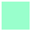

Warning
This document is in the middle of a major revision. Some sections might be missing text, or have French text as placeholder.
In addition to walls, which can block Reeborg’s path, there are a number of images that are used to represent various objects.
Reeborg can interact with various objects. He can take()
and put() down the following such objects, in particular,
token, Reeborg’s favourite object. Tokens are like coins, except
most people find them of little value, especially with the smiling face
image; Reeborg begs to differ.
If there are more than one
object present, and Reeborg needs to specify which object to take() or
put() down, Reeborg uses the name of the object as a string of character,
as in put("token") or take('token') [both single and double quotes
can be used, as long as they occur in pairs.]
In addition to tokens, Reeborg can interact with various geometrical shapes, fruits, flowers, vegetables, etc. [Many of these images have been adapted from http://openclipart.com]
| apple: | |
|---|---|
| banana: | |
| carrot: | |
| daisy: | |
| dandelion: | While they can be pretty, dandelions are usually considered to be weeds - and often need to be removed from the world. |
| leaf: | Reeborg doesn’t particularly likes leaves. The presence of a leaf (or more) in Reeborg’s World usually indicates that Fall has arrived, the leaves are falling from the trees, and Reeborg must rake them instead of playing. Given the opportunity, Reeborg always prefer to play. |
| orange: | |
| strawberry: | |
| tulip: | |
| square: | |
| star: | |
| triangle: | A triangle of this kind could only exist inside Reeborg’s World. Here’s a close-up view of this triangle. |
| grass: | Harmless for Reeborg to walk on. |
|---|---|
| gravel: | Harmless for Reeborg to walk on. |
| water: | Can cause Reeborg to drown. Fortunately, Reeborg can
detect it using front_is_clear(). |
| mud: | Can cause Reeborg to get hopelessly stuck. Reeborg cannot detect mud before stepping into it. |
| brick wall: | Reeborg can crash into this; fortuntaly, it can
detect it using front_is_clear(). |
| ice: | Causes Reeborg to slip and continue it movement towards the next tile. This could be problematic if an obstacle lies there. Reeborg cannot detect ice before stepping into it. |
Special objects, like normal objects, are drawn above background tiles. However, they can not be picked up by Reeborg and they can change the expected behaviour of a tile.
| bridge: | Allows Reeborg to cross safely over water. Reeborg will always express its happiness at being able to cross over a bridge instead of falling in water. |
|---|---|
| fences: | - - - Can be detected by Reeborg. If Reeborg is asked to move where a fence is located, Reeborg will attempt to jump over it but will fail miserably. Note that to make enclosed areas, you might have to overlap the image of the last one over one of the other three images. |
| box: |  Boxes are pushed out of the way by Reeborg ... provided something
else, like a wall or another box, etc., is not preventing the box to move.
A box pushed by Reeborg in the water will float and become a bridge allowing
Reeborg to safely cross over water. The example below illustrates this Boxes are pushed out of the way by Reeborg ... provided something
else, like a wall or another box, etc., is not preventing the box to move.
A box pushed by Reeborg in the water will float and become a bridge allowing
Reeborg to safely cross over water. The example below illustrates this |
Reeborg, must accomplish certain goals, like reaching a final position, or dropping certain objects at a certain location. To indicate that one (or more) object must be dropped at a given position, these grey images are used:


To indicate that Reeborg must end its task at a given final position, one of these images is used:
